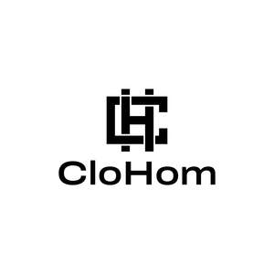

Trade Mark Journal No.2025/042 17 October 2025
UK00004274680 7 October 2025 (24,25)

- Class 24
- Comforters (bedding); Quilted blankets [bedding]; Quilt bedding mats; Textile goods for use as bedding; Disposable bedding of textile; Bed linen and blankets; Comforters for beds; Linens; Textile fabrics for use in the manufacture of bedding; Bed clothes and blankets; Disposable bedding of paper; Crib bumpers [bed linen]; Bed blankets; Blankets (Bed -); Cot bumpers [bed linen]; Bed linen; Linen for the bed; Linen (Bed -); Canopies (bed linen); Silk bed blankets; Bed clothes; Ticks (mattress and pillow coverings); Bed blankets made of cotton; Valances for beds; Crib sheets; Bedsheets; Fabric bed valances; Bedspreads; Household linens; Bed coverings; Bed linen of paper; Valanced bed sheets; Coverlets [bedspreads]; Bath sheets (towels); Bed linen and table linen; Bed quilts; Textile piece goods for making bedding covers; Fitted bed sheets; Bed valances; Bath linen, except clothing; Duvets; Cot blankets; Cot sheets; Sofa blankets; Cotton blankets; Woven fabrics for use in the manufacture of clothing for use in clean rooms; Furnishing fabrics; Textile fabrics for use in the manufacture of beds; Bath linen; Towels of textiles; Silk fabrics for furniture; Bed sheets of plastic [not being incontinence sheets]; Bed sheets of plastic, not being incontinence sheets; Furnishing and upholstery fabrics; Infants' bed linen; Bed pads; Bed sheets of paper; Window furnishing fabrics; Fabrics for the manufacture of furnishings; Protective loose covers for mattresses and furniture; Pillowcases [pillow slips]; Pillowcases; Bed canopies; Bed blankets made of man-made fibres; Bath sheets; Textiles for furnishings; Fire-retardant textile shower curtains; Woven fabrics for furniture; Bed linen made of non-woven textile material; Bathroom towels; Flat bed sheets.
- Class 25
- Clothing; Men's clothing; Jackets [clothing]; Ready-to-wear clothing; Jackets being sports clothing; Woolen clothing; Jerseys [clothing]; Knitwear [clothing]; Shorts [clothing]; Triathlon clothing; Denims [clothing]; Athletic clothing; Bottoms [clothing]; Leather clothing; Clothing of leather; Leather (Clothing of -); Chaps (clothing); Clothing for sports; Sports clothing; Clothing for cycling; Gloves [clothing]; Gloves as clothing; Gabardines [clothing]; Oilskins [clothing]; Clothing for gymnastics; Jackets (Stuff -) [clothing]; Stuff jackets [clothing]; Collars [clothing]; Parts of clothing, footwear and headgear; Linen clothing; Aprons [clothing]; Casual clothing; Cashmere clothing; Golf clothing, other than gloves; Garments for protecting clothing; Windproof clothing; Footwear for men; Waterproof clothing; Headbands for clothing; Nappy pants [clothing]; Hoods [clothing]; Wristbands [clothing]; Headbands [clothing]; Playsuits [clothing]; Clothing for leisure wear; Clothes; Furs [clothing]; Kerchiefs [clothing]; Tops [clothing]; Maternity clothing; Rainproof clothing; Knitted clothing; Quilted jackets [clothing]; Belts [clothing]; Belts for clothing; Latex clothing; Clothing for skiing; Foulards [clothing articles]; Clothing layettes; Silk clothing; Layettes [clothing]; Bandeaux [clothing]; Leisure clothing; Trunks being clothing; Capes (clothing); Women's clothing; Jogging bottoms [clothing]; Corsets [clothing, foundation garments]; Sports clothing [other than golf gloves]; Clothing for men, women and children; Clothes for sports; Embroidered clothing; Footwear for women; Veils [clothing]; Clothing for cyclists; Clothing for babies; Visors [clothing]; Clothes for sport; Muffs [clothing]; Clothing for wear in wrestling games; Clothing for children; Underwear for women; Thermal clothing; Articles of clothing; Gussets for underwear [parts of clothing]; Gloves for apparel; Water-resistant clothing; Babies' pants [clothing]; Mitts [clothing]; Bodies [clothing]; Clothing for infants; Footwear for men and women; Ties [clothing]; Drawers [clothing]; Drawers as clothing; Leather belts [clothing]; Fabric belts [clothing]; Boas [clothing]; Fishing clothing; Paper hats for use as clothing items; Shoes for leisurewear; Dance clothing; Woven clothing; Articles of sports clothing; Sports garments; Underclothing for women; Bathing costumes for women; Coats for women; Clothing for fishermen; Girls' clothing; Infant clothing; Corsets [foundation clothing]; Corsets being foundation clothing; Coats for men; Clothing for wear in judo practices; Bathing suits for men; Beach clothing; Socks for men; Smart clothing; Slipovers [clothing]; Ladies wear; Pockets for clothing; Baby clothes; Trousers for children; Boy shorts [underwear]; One-piece clothing for infants and toddlers; Baby layettes for clothing; Dresses for infants and toddlers; Overalls for infants and toddlers; Swim wear for children; Baby doll pyjamas; Baby shoes; Socks for infants and toddlers; Snap crotch shirts for infants and toddlers; Baby pants; Underpants for babies; Knitted baby shoes; Shoes for infants; Beach clothes; Party hats [clothing]; Outerclothing for boys; Swaddling clothes; Baby boots; Children's clothing; Boys' clothing; Infant wear; Baby sandals; Clothing for horse-riding [other than riding hats]; Braces for clothing; Cloth bibs for adult diners; Outerclothing for girls; Jogging sets [clothing]; Figure skating clothing; Belts (Money -) [clothing].
JUSTLOOKCLOTHING LTD